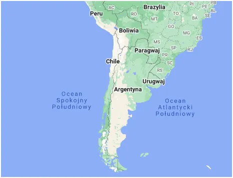

“Nie płacz Argentyno!” Jesteś dorosła, wiesz co robisz!
Czyli o tym jak wylansowany przez media "radykał" będzie kompromitował konserwatywne wartości i wyprzedawał swój kraj za bezcen.
Argentyna jest dla USA ważnym klejnotem, który od dekady flirtował z BRICS. 47 mln ludzi, 24 pozycja w światowym rankingu PKB. Jest to kolejny bogaty kraj biednych ludzi, w którym USA tanio kupuje wołowinę i surowce, a gdy lokalne siły próbują się usamodzielnić do akcji wchodzi wojskowa junta i na dekadę wsadza "buntowników" do więzień.
Teraz mamy czasy "demokracji" i Argentyna będzie okradana zgodnie z "austriacką szkołą ekonomiczną" w sposób "liberalny i szokowy", taki "Balcerowicz Turbo". Turbo, bo Javiera Milei, nowy prezydent kraju, symbol "wolnego rynku", zamierza na początek zlikwidować własną walutę i używać tylko dolara USA. Po co nam brzydkie peso, które ciągle traci w hiperinflacji, dolar to symbol szczęścia, Argentyńczycy już się czują jak Amerykanie w słodkim serialu.
Potrwa to klika lat, Argentyna zabłyśnie na światowych salonach, zabłyśnie jak płonąca ćma nad ogniskiem. Gospodarka ruszy, pojawią się inwestorzy, niskie koszty pracy i żywności pomogą inwestorom. Naród nabierze otuchy i zacznie zaciągać kredyty w dolarach, ciąg dalszy znamy.

Przez kilka lat będzie to wizytówka "świata zachodniego, szkoły austriackiej", itp. będąca pokusą dla krajów stojących na rozdrożu między wschodem i zachodem. W tym czasie, bez bufora kursu walutowego Amerykanie będą wywozili za wydrukowane bez żadnego wysiłku dolary, co zechcą.
Waluta mocarstwa jest dobra dla małych państw, gdzie koszt druku własnej waluty był poważnym problemem. Dla tak wielkiej gospodarki to samobójstwo na raty, otwarcie bram miasta przed spekulantami. Bez telewizji i internetu nie dałoby się oszukać tylu ludzi na tak prosty numer.
Paweł Klimczewski